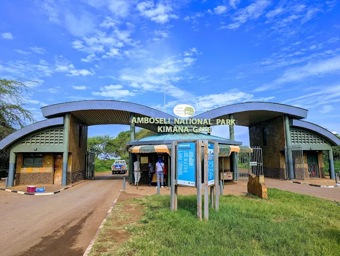
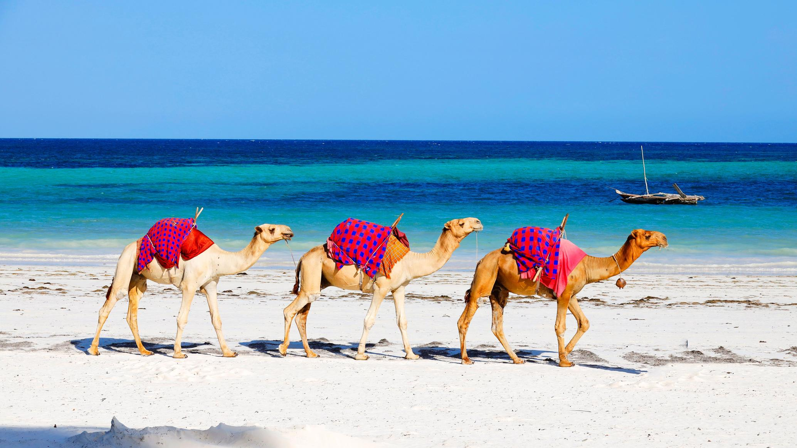

Among many countries with tourist attraction sites Kenya is one of the best country with many and beautiful tourist sites
that each and everyone is free to visit, explore and learn more.Welcome to Super Eagles Travel and Tours.it is one of the best tour and travel companies in Kenya.Welcome to Kenya EXPLORE, DISCOVER AND LEARNAmboseli National Park is one of Africa’s premier destinations for close encounters with large elephant herds.
Cultural heritage adds depth to the Amboseli experience, with the vibrant traditions of the Maasai community offering meaningful cultural interactions alongside wildlife viewing.
click here to learn more